The Python programming language allows a programmer to pass a function as an argument into another function. A function that accepts other functions in its parameters is known as a higher-order function. Higher-order functions are often used to process the elements in a list. Before seeing an example of using a higher-order function to process a list, first consider the program in example 1 that doesn't use a higher-order function but instead uses a for loop to convert a list of temperatures from Fahrenheit to Celcius.
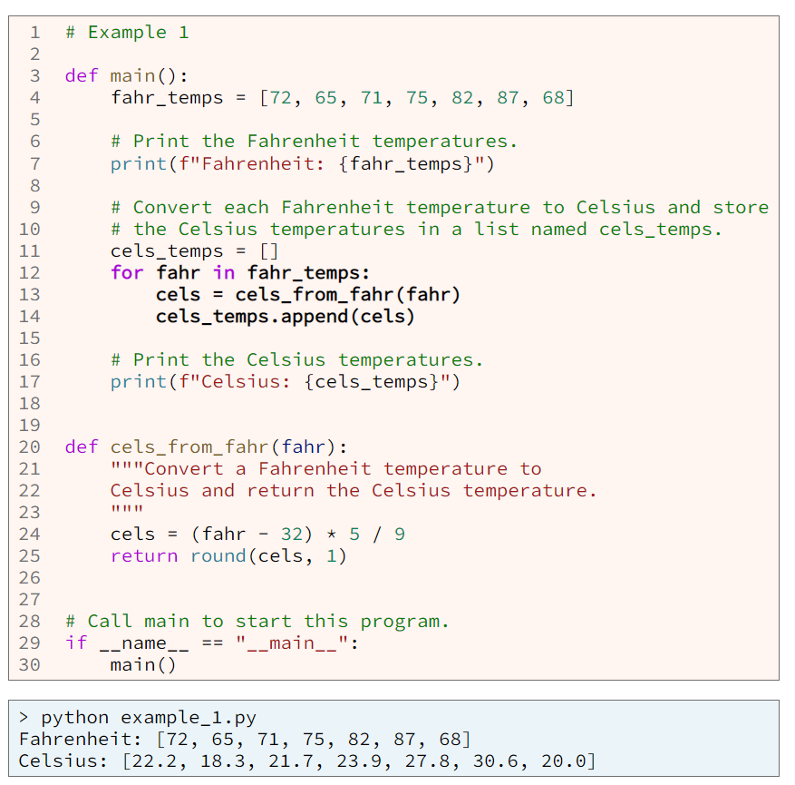At lines 12-14 in example 1, there is a for loop that converts each Fahrenheit temperature to Celcius and then appends the Celcius temperature onto a new list. Writing a for loop like this is the traditional way to process all the elements in a list and doesn't user higher-order functions.
Python includes a built-in higher-order function named map that will process all the elements in a list and return a new list that contains the results. The map function accepts a function and a list as arguments and contains a loop inside it, so that when a programmer calls the map function, he/she doesn't need to write a loop. The map function is a higher-order function because it accepts a function as an argument. Consider the program in example 2 that produces the same results as example 1.
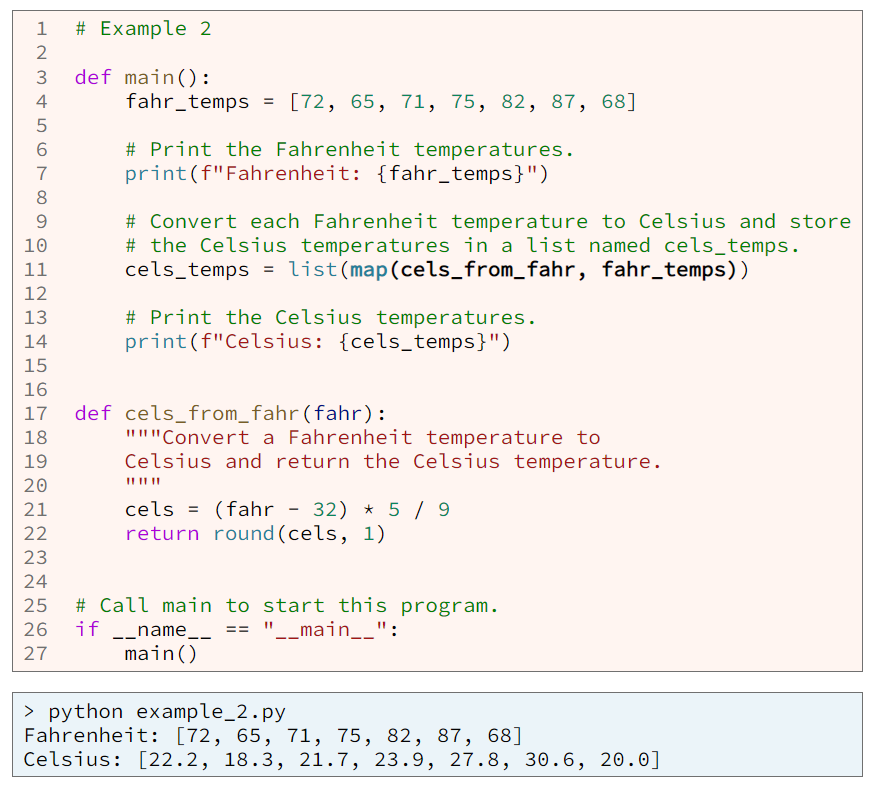Notice that example 2, doesn't contain a for loop. Instead, at line 11, it contains a call to the map function. Remember that the map function has a loop inside it, so that the programmer who calls map, doesn't have to write the loop. Notice also at line 11 that the first argument to the map function is the name of the cels_from_fahr function. In other words, at line 11, we are passing the cels_from_fahr function into the map function, so that map will call cels_from_fahr for each element in the fahr_temps list.
The map function is just one example of a higher-order function. Python also includes the built-in higher-order sorted and filter functions and several higher-order functions in the functools module.
The Python programming language allows a programmer to define nested functions. A nested function is a function that is defined inside another function and is useful when we wish to split a large function into smaller functions and the smaller functions will be called by the containing function only. The program in example 3 produces the same results as examples 1 and 2, but it uses a nested function. Notice in example 3 at lines 5-10 that the cels_from_fahr function is nested inside the main function.
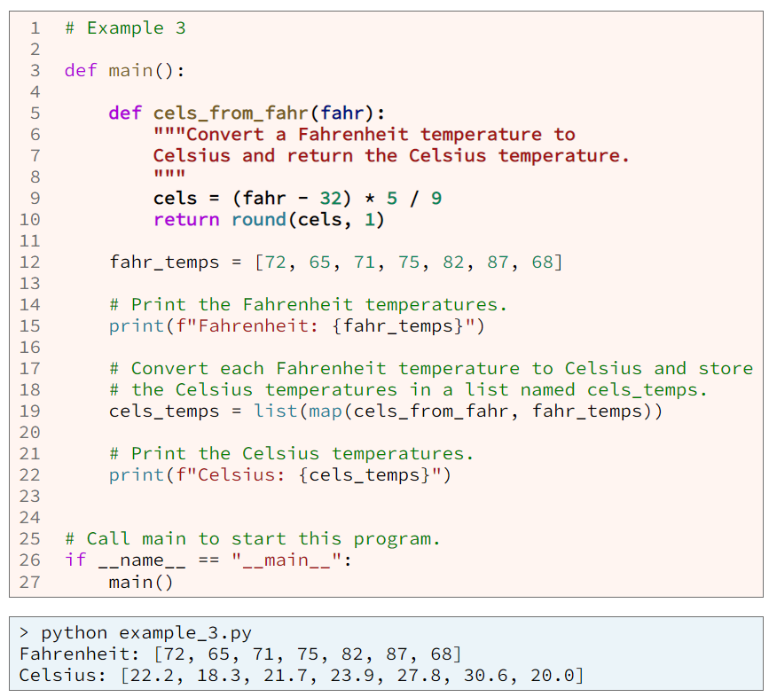A Python lambda functio is a small anonymous function, meaning a small function without a name. A lambda function is always a small function because the Python language restricts a lambda function to just one expression. Consider the program in example 4 which is yet another example program that converts Fahrenheit temperatures to Celcius. Notice the lambda function at line 12 of example 4. It takes one parameter named fahr and computes and returns the corresponding Celcius temperature. At line 16, the lambda function is passed into the map function.
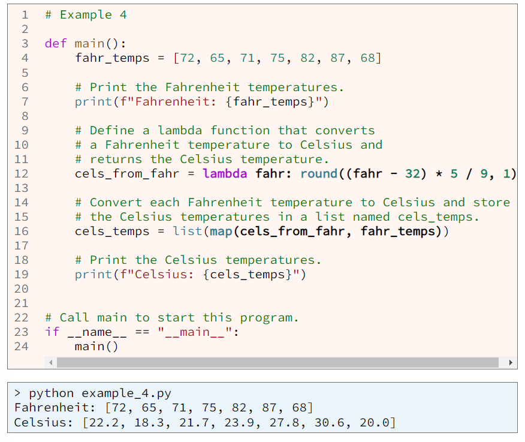Some people are confused by the statement that a lambda function is an anonymous function (a function without a name). Looking at the lambda function in example 4 at line 12, it appears that lambda function is named cels_from_fahr. However, cels_from_fahr is the name of a variable, not the name of the lambda function. The lambda function has no name. This distinction may seem trivial until we see an example of an nline lambda function. Notice in the next example that the lambda function is defined inside the parentheses for the call to the map function.
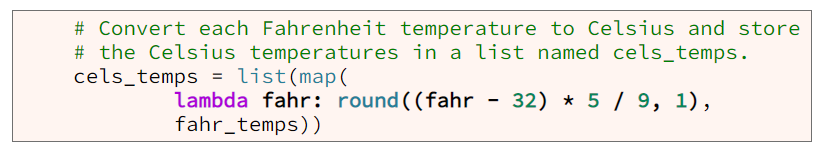To write a lambda function write code that follows this template:
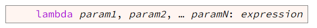As shown in the template, type the keyword lambda, then parameters separated by commas, then a colon (:), and finally an expression that performs arithmetic, modifies a string, or computes something else.
In Python, every lambda function can be written as a regular Python function. Fpr example, the lambda function in example 4 can be rewritten as the cels_from_fahr function in examples 1, 2, and 3.
Example 5 contains a program that uses the map and filter functions to complete the requirements of the program. The example program works by doing the following:
Python includes a built-in higher-order function named sorted that accepts a list as an arguement and returns a new sorted list. Calling the sorted function is straightforward for a simple list such as a list of strings or a list of numbers as shown in example 6 and its output.
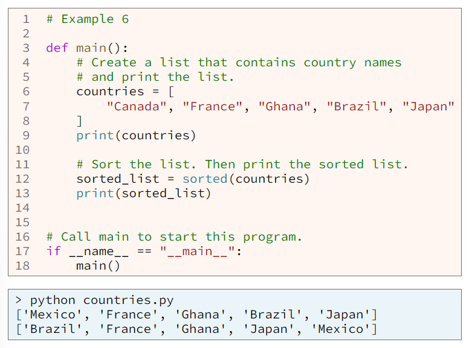A compound list is a list that contains lists. Sorting a compound list is more complex than sorting a simple list. Considering this compound list that contains data about some countries.
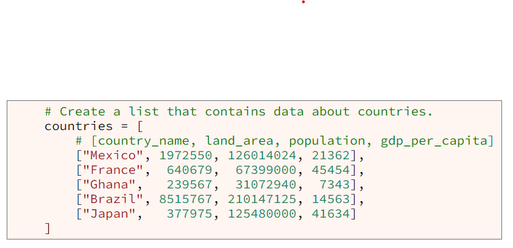Perhaps we want the countries compound list sorted by country name or perhaps we want it sorted by population. The element that we want a list sorted by is known as the key element. If we want to use the sorted function to sort a compound list, we must tell the sorted function which element is the key element, which we do by passing a small function as an argument into the sorted function. This small function is called the key function and extracts the key element from a list as shown in example 7.
Notice at line 26 in example 7, there is lambda function that extracts the population from a country. Then at line 29 that lambda function is passed to the sorted function so that the sorted function will sort the list of countries by the population.
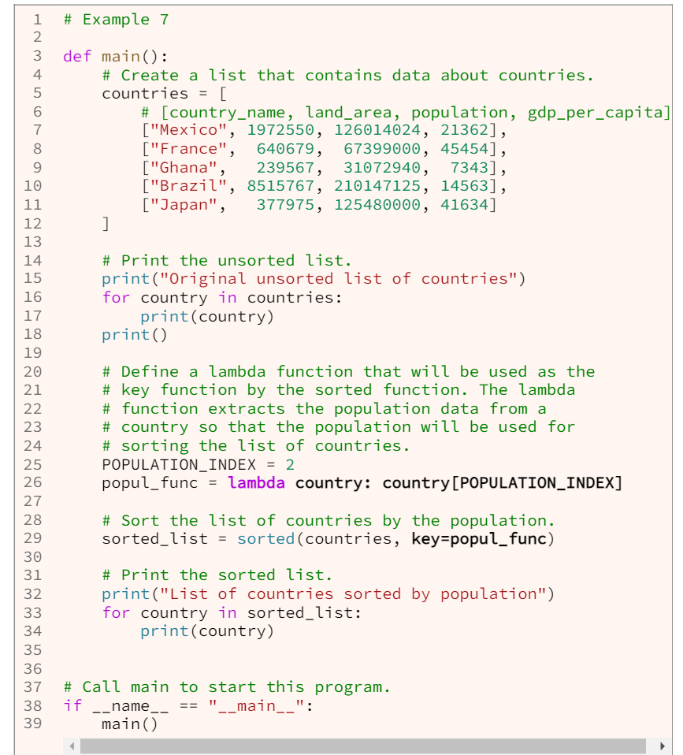 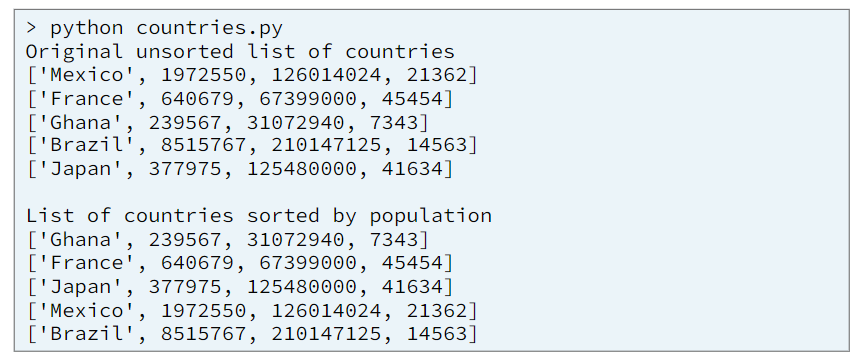By using a key function it's possible to sort a compound list with a key element that isn't in the list. Consider the compound list named students that contains data about various students in example 8. Within the list, each student's given name and surname are stored separately. It is common for a user to want such a list to be sorted by surname and then by given name. A simple way to do that is to write a key function that combines the surname and given name elements and returns the combined name as the key that the sorted function will use for sorting.
Lines 21-22 in example 8 contain a lambda function that combines a student's surname and given name into a string that is used as the key by the sorted function at line 25. Notice in the output from example 8 that the students are sorted by surname and then by given name.
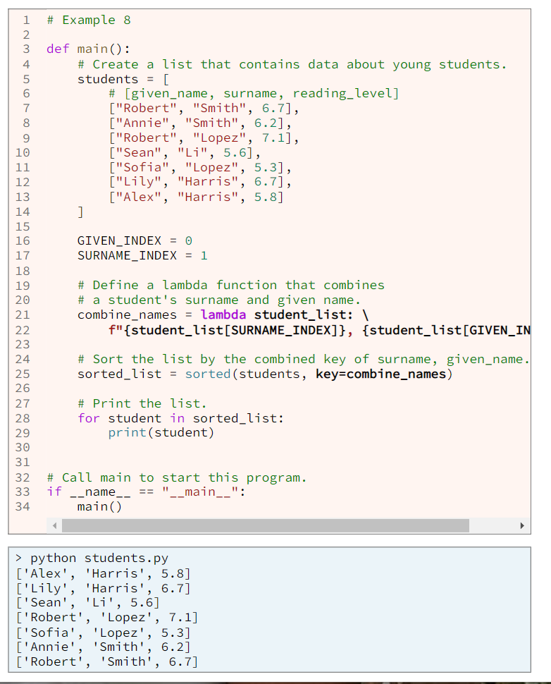